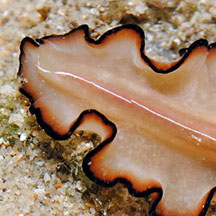

|
|
| flatworms text index | photo index |
|
worms > Phylum Platyhelminthes >
Class
Turbellaria > Order Polycladida
|
| Orsak's flatworm Nymphozoon orsaki Family Pseudocerotidae updated Feb 2020 Where seen? This flatworm is sometimes seen on coral rubble near living reefs. Features: 5-6cm long. Body background pinkish cream. Narrow black margin with inner orange margin. Along the middle of the body, one fine white stripe. The underside is same colour as upper body colour and margins. It has a pair of pseudotentacles that are squarish and ruffled on the sides, with white tips. Sometimes mistaken for the Brown-striped flatworm which is more brown and has a broad dark stripe in the middle of the body. |
 Pseudotentacles squarish, ruffled on the sides, with white tips. |
|
Acknowledgements
|